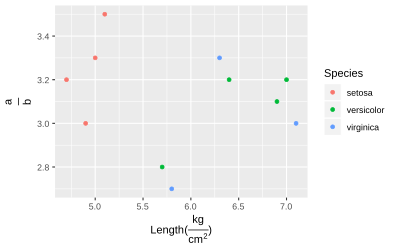

12 Some \(\LaTeX\) for PDF output
\pagenumbering{gobble}This LaTeX code suppress the page number.\pagenumbering{arabic}‘Turn on’ page number closed by\pagenumbering{gobble}.\newpage: Start a new page
The 3 type of code can be useful in the situation below:
---
title: "A Title"
author: "Someone"
date: "`r format(Sys.Date(), '%B %e, %Y')`"
---
... Some content in the first page (title page) ...
\pagenumbering{gobble} % Suppress page number on the title page
\newpage % Start a new page
... Some content in the second page ...
\pagenumbering{arabic} % Revert suppression of page number
% Now, the page num starts with '2'13 \(\LaTeX\) Math
Passing Matrix Object
Setup
Add results='asis' to r code chunk option.
```{r results='asis', echo=FALSE}
library(mat2tex)
mt <- c(1,2)
"$A =" %_% xm(mt,0) %_%"_{2 \\times 1}$"
```\(A = \begin{pmatrix} 1 \\ 2 \\ \end{pmatrix} _{2 \times 1}\)
Include Matrix in Text
This is the variable `mt`,
```{r results='asis', echo=FALSE}
library(mat2tex)
mt <- matrix(1:4, 2,2)
"$A =" %_% xm(mt,0) %_%"^{-1}$"
```
, which is a matrix.renders as:
This is the variable mt, \(A = \begin{pmatrix} 1 & 3 \\ 2 & 4 \\ \end{pmatrix} ^{-1}\) , which is a matrix.
Check here for more information.
kable
library(knitr)
library(dplyr)
iris_data <- head(iris) %>%
select(Sepal.Length, Sepal.Width)
colnames(iris_data) <- c("$\\alpha$", "$\\frac{a}{b}$")
kable(iris_data, format = "markdown", align = "c")| \(\alpha\) | \(\frac{a}{b}\) |
|---|---|
| 5.1 | 3.5 |
| 4.9 | 3.0 |
| 4.7 | 3.2 |
| 4.6 | 3.1 |
| 5.0 | 3.6 |
| 5.4 | 3.9 |
Plotting Expression
library(latex2exp)
library(ggplot2)
iris_data2 <- iris[c(1:3, 50:53, 100:103), ] %>%
select(Sepal.Length, Sepal.Width, Species)
iris_data2 %>% ggplot() +
geom_point(aes(x = Sepal.Length,
y = Sepal.Width,
color = Species)) +
labs(x = TeX("Length($\\frac{kg}{cm^2}$)"),
y = TeX("\\frac{a}{b}"))